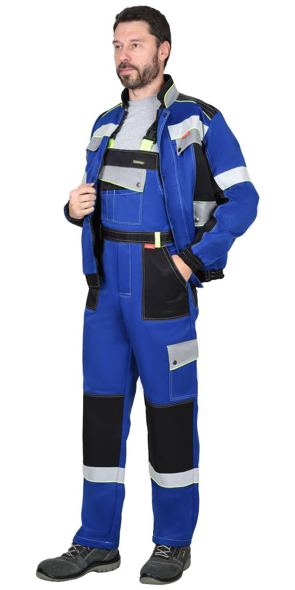

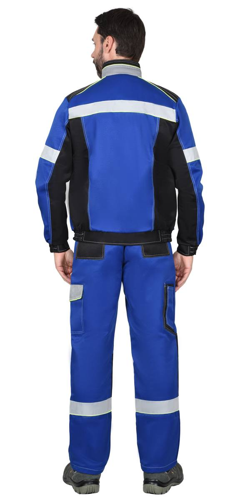
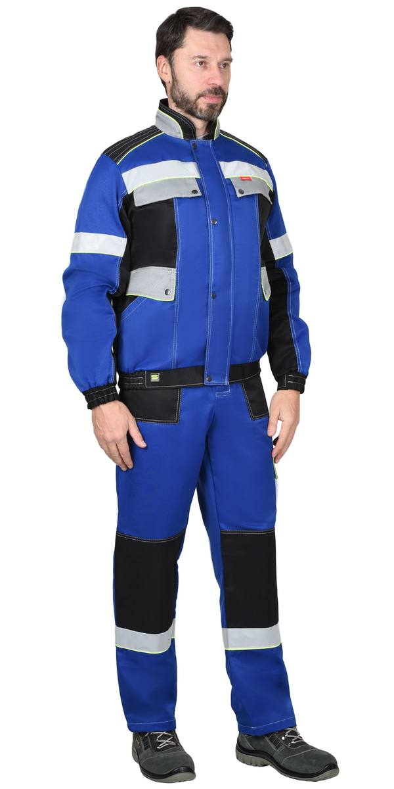
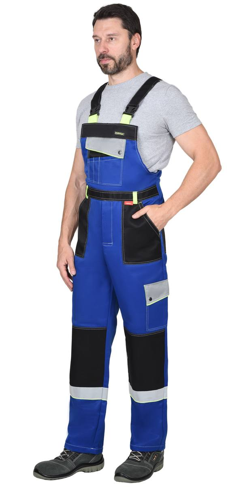
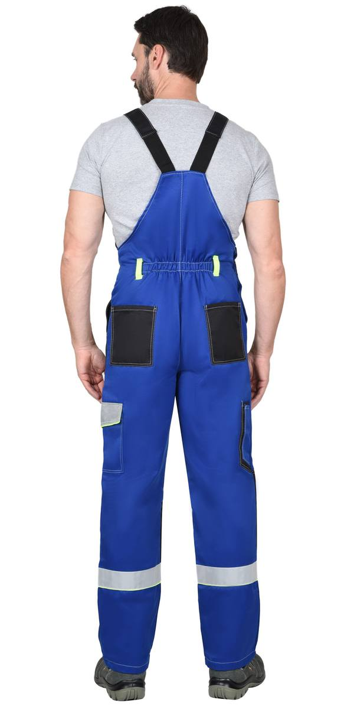
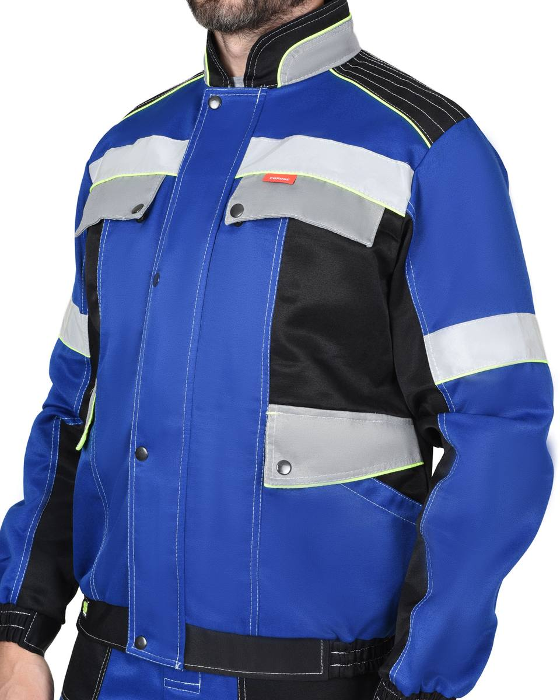
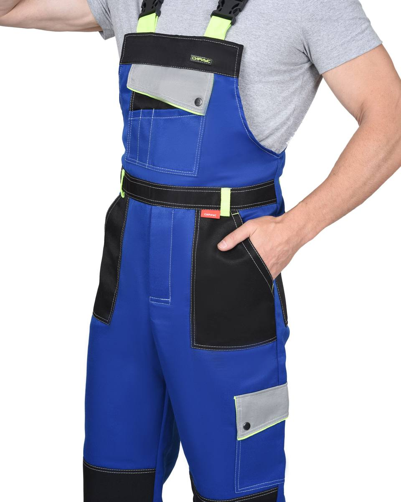
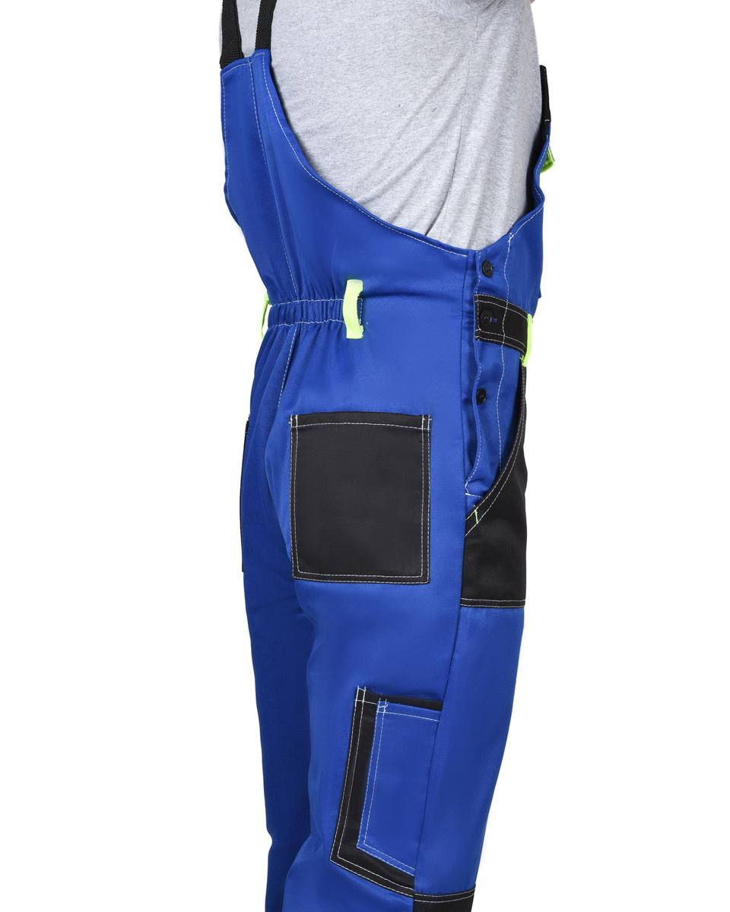
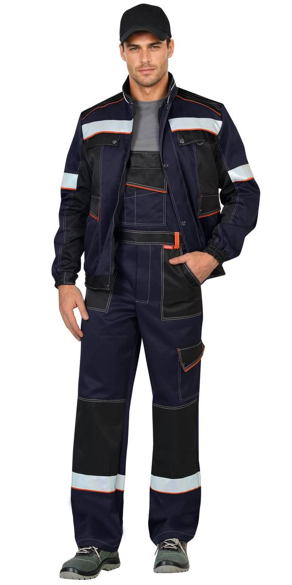
Костюм куртка кор., п/к синий с черн. и оранжевым кантом, СОП50мм тк.Твилл 240 (ЧЗ)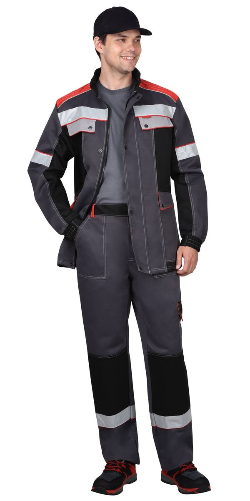
Костюм : кур.дл., брюки т-сер. со св-серым,черн.красн. и СОП 50мм тк.Твилл 240 (ЧЗ)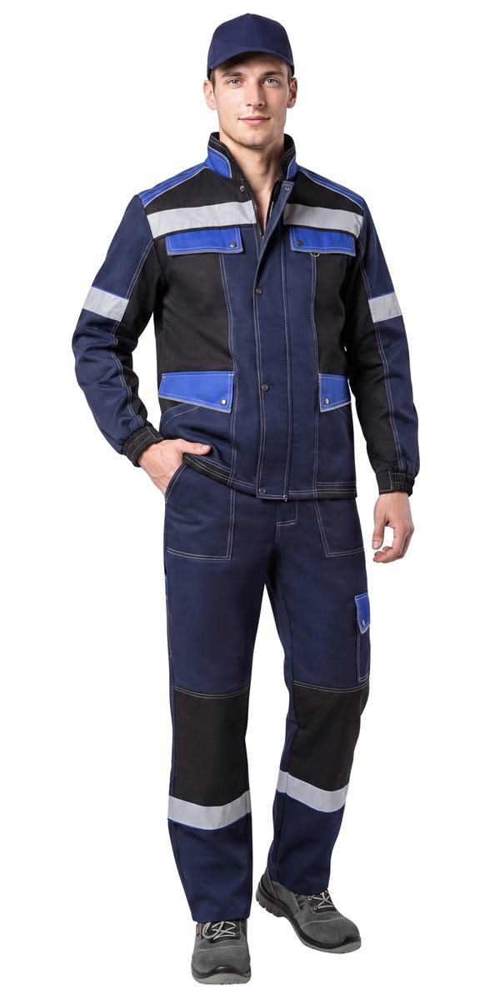
Костюм : кур.дл.,брюки т.синий. с черн. и вас. СОП 50мм. тк.Твилл 240 (ЧЗ)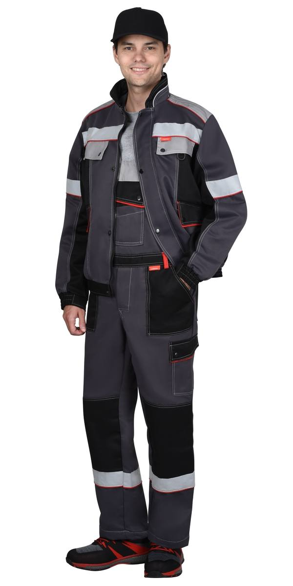
Костюм : муж., кур.кор., п/к т-сер. со св-серым,черн.красн. и СОП50мм тк.Твилл 240(ЧЗ)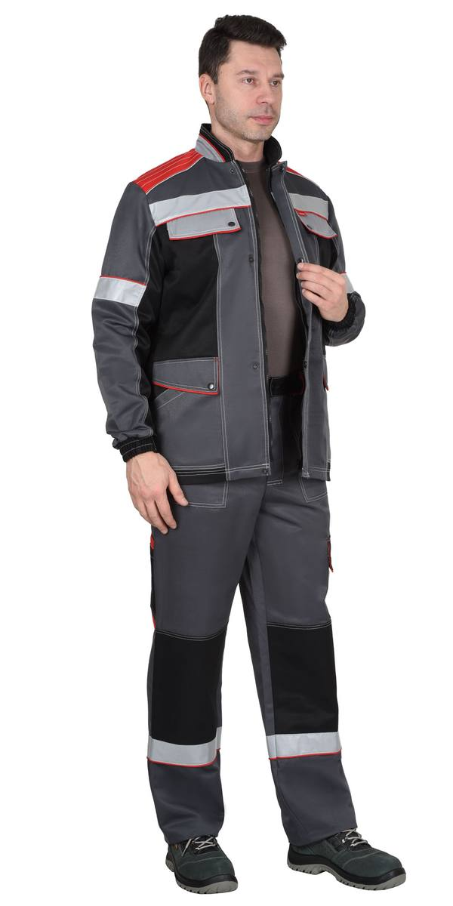
Костюм муж.,кур.длин. брюки,т-серый со св-серым ,черным и краснымСОП50мм (распродажа)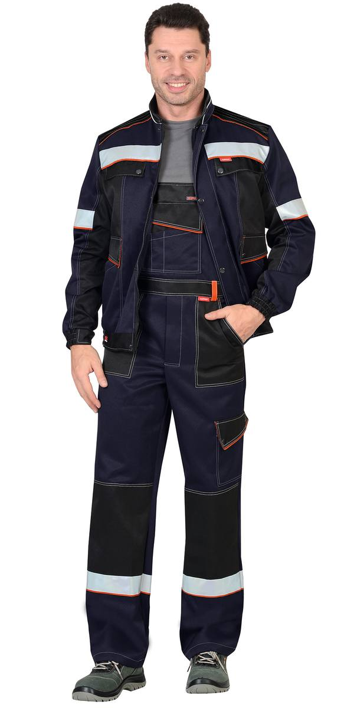
Костюм муж.,кур.кор.,п/к, синий с черн. и оранжевым кантом ,СОП50мм (ЧЗ)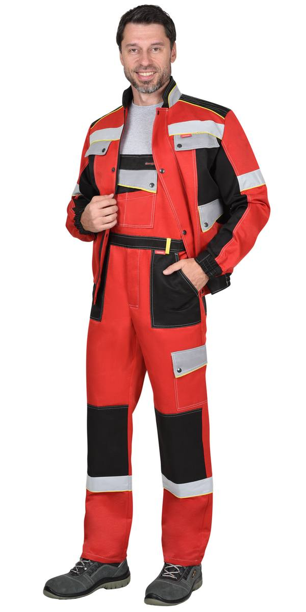
Костюм муж.,курт.кор. п/к, красный с черным и св.серым СОП 50мм (ЧЗ)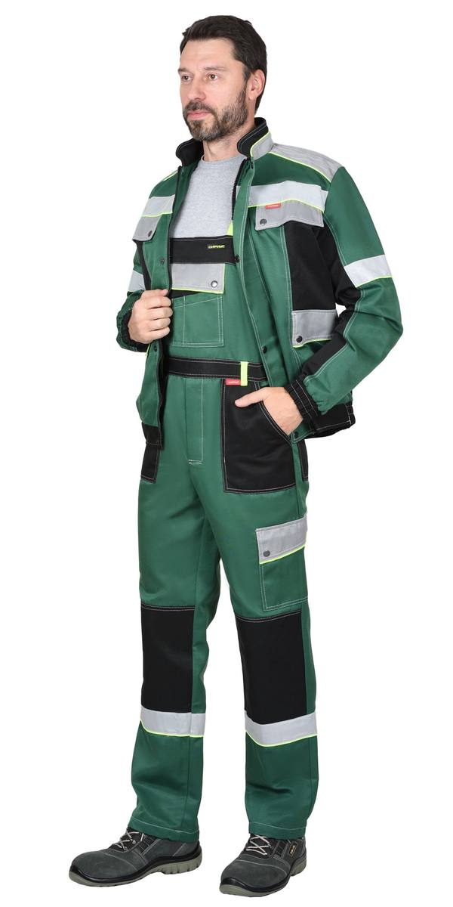
Костюм :муж., кур. кор., п/к. зеленый с черным и св.серым и СОП 50мм. (ЧЗ)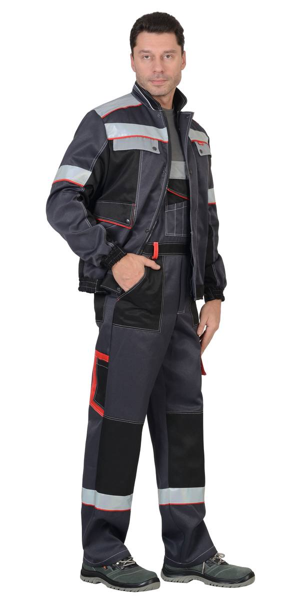
Костюм :муж., кур. кор., п/к. т.серый со св.серым,черным,красным и СОП 50мм. (ЧЗ)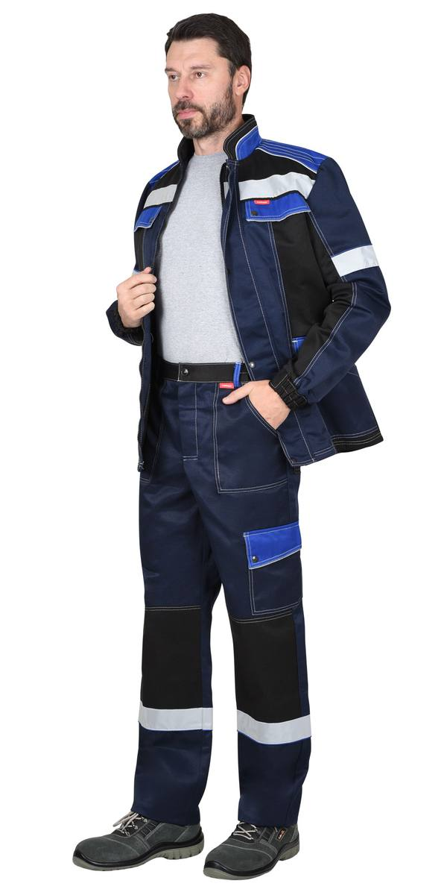
Костюм :муж., куртка, брюки синий с черным и васильковым (ЧЗ)| Артикул | Вариант / цвет |
|---|---|
| 123451 | Костюм куртка кор., п/к василек с черным и СОП 50 мм (ЧЗ) |
| 170479 | Костюм куртка кор., п/к синий с черн. и оранжевым кантом, СОП50мм тк.Твилл 240 (ЧЗ) |
| 100379 | Костюм : кур.дл., брюки т-сер. со св-серым,черн.красн. и СОП 50мм тк.Твилл 240 (ЧЗ) |
| 164404 | Костюм : кур.дл.,брюки т.синий. с черн. и вас. СОП 50мм. тк.Твилл 240 (ЧЗ) |
| 164973 | Костюм : муж., кур.кор., п/к т-сер. со св-серым,черн.красн. и СОП50мм тк.Твилл 240(ЧЗ) |
| 104985 | Костюм муж.,кур.длин. брюки,т-серый со св-серым ,черным и краснымСОП50мм (распродажа) |
| 100382 | Костюм муж.,кур.кор.,п/к, синий с черн. и оранжевым кантом ,СОП50мм (ЧЗ) |
| 117524 | Костюм муж.,курт.кор. п/к, красный с черным и св.серым СОП 50мм (ЧЗ) |
| 117244 | Костюм :муж., кур. кор., п/к. зеленый с черным и св.серым и СОП 50мм. (ЧЗ) |
| 100049 | Костюм :муж., кур. кор., п/к. т.серый со св.серым,черным,красным и СОП 50мм. (ЧЗ) |
| 115748 | Костюм :муж., куртка, брюки синий с черным и васильковым (ЧЗ) |